História da Microdigital Eletrônica
-
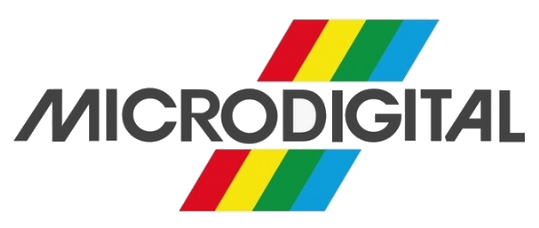
Inicio da Microdigital
A Microdigital Eletrônica Ltda., foi uma influente empresa brasileira de Microinformática na década de 1980. Fundada em 1981 pelos irmãos George e Tomas Kovari.
1980 -
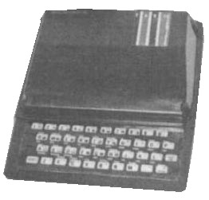
TK80
O TK80 foi um computador doméstico desenvolvido pela empresa brasileira Microdigital Eletrônica, sendo uma versão inspirada no ZX80. Ele foi lançado juntamente com o TK82C durante a I Feira Internacional de Informática em 1981, com preços de Cr$ 68.850,00 para a versão de 1 KiB e Cr$ 73.650,00 para a versão de 2 KiB. Esses valores eram equivalentes ao custo de um televisor colorido na época.
1981 -
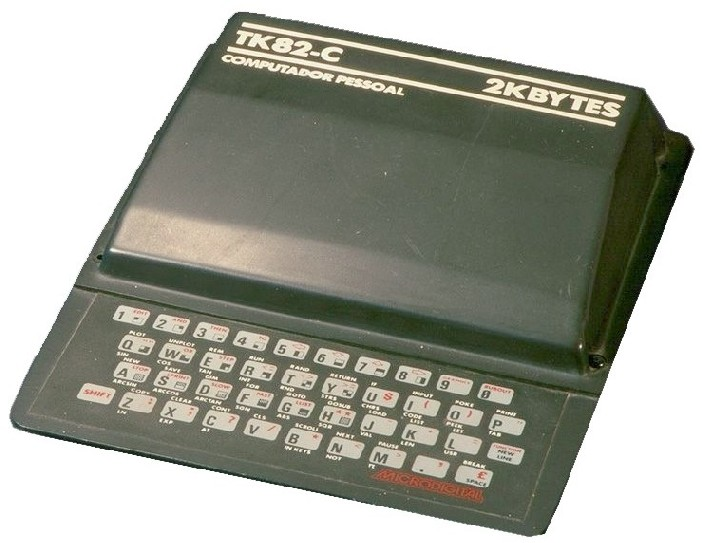
TK82 e TK82-C
O TK82/TK82-C foi um computador doméstico fabricado pela empresa brasileira Microdigital Eletrônica a partir de 1981. O TK82C era um clone do ZX81, enquanto seu antecessor, o TK82, teve uma existência breve, sendo uma cópia do ZX80.
1981 -
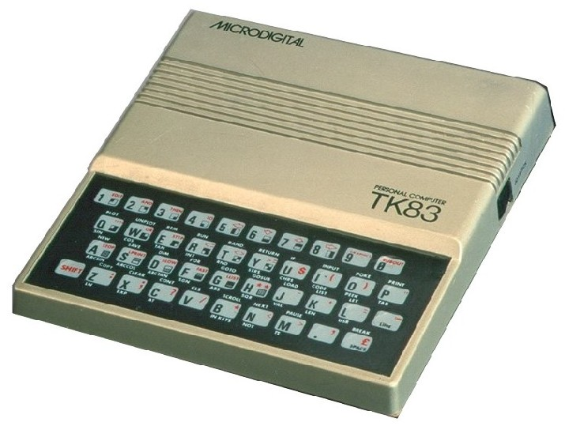
TK83
O TK83 foi um computador doméstico fabricado pela empresa brasileira Microdigital Eletrônica a partir de outubro de 1983. No entanto, em dezembro de 1984, a Microdigital parou de anunciar o produto. O TK83 era um clone do ZX81 e, em termos práticos, pode ser visto como uma versão renovada do TK82C, apresentando a função SLOW.
1982 -
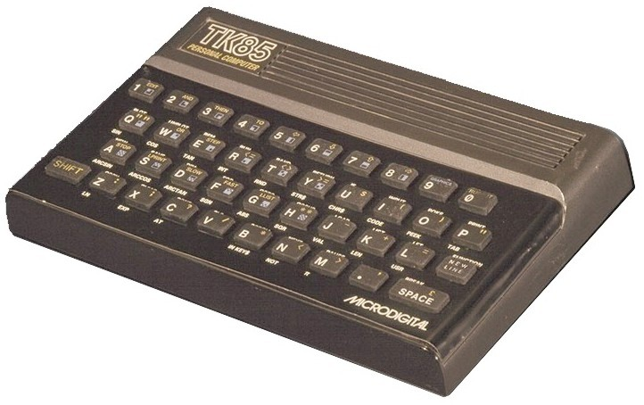
TK85
O TK 85 foi uma versão brasileira do Sinclair ZX81, criado pela Microdigital Eletrônica Ltda. Ele possuía um gabinete semelhante ao do ZX Spectrum e utilizava o microprocessador Z-80A de 8 bits. O computador foi lançado no mercado a partir de março de 1983, disponível em versões com 16 kiB e 48 kiB de memória RAM.
1983 -
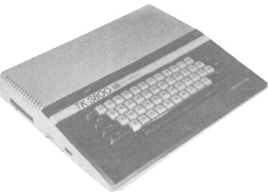
TK S800 (VaporWare)
O TKS800 foi um protótipo de um computador doméstico de 8 bits, projetado para ser compatível com o TRS-80 Color Computer. Ele utilizava o microprocessador Motorola MC6809E, diferenciando-se dos outros produtos da Microdigital, que eram baseados em Sinclair e Apple Inc. No entanto, o TKS800 se tornou um famoso caso de vaporware na indústria de informática brasileira. Embora tenha sido apresentado pela Microdigital Eletrônica na IV Feira de Informática em 1984, nunca entrou em produção comercial.
1984 -
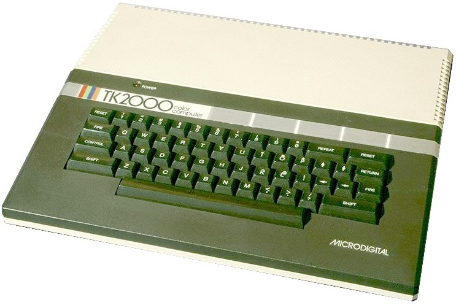
TK 2000
O TK2000 foi um microcomputador desenvolvido pela empresa brasileira Microdigital Eletrônica Ltda, apresentado ao público na Feira de Informática de 1983 e lançado em 1984. Ele utilizava a CPU 6502 e era, na verdade, um clone do Micro-Professor MPF-II, fabricado pela Multitech (antecessora da Acer) em Taiwan. O TK2000 possuía uma compatibilidade parcial com o software e hardware do Apple II+.
1984 -
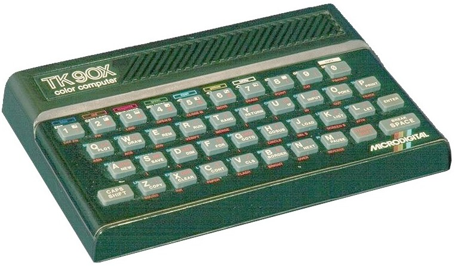
TK90X
O TK90X foi um computador de 8 bits lançado no Brasil pela Microdigital Eletrônica em junho de 1985, baseado no ZX Spectrum da Sinclair Research. Ele utilizava o microprocessador Z-80A de 8 bits e contava com um interpretador BASIC, tornando-o acessível para programadores iniciantes. O TK90X ganhou popularidade devido ao seu baixo custo, simplicidade e ampla biblioteca de software disponível para o ZX Spectrum. Era simplesmente necessário conectá-lo a uma televisão colorida para começar a usá-lo.
1985 -
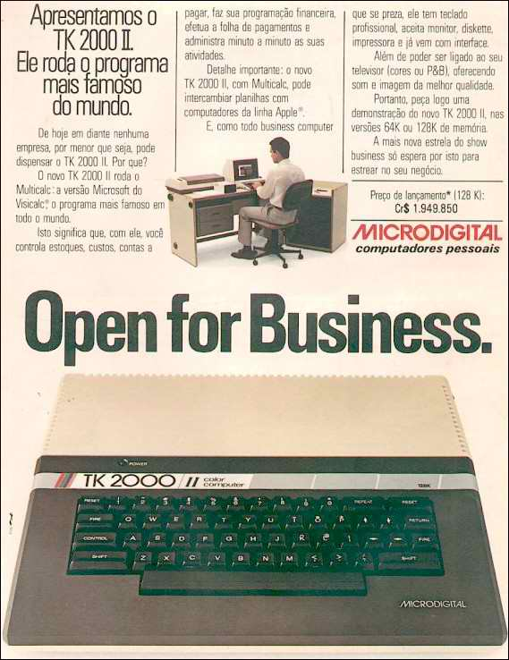
TK 2000 II
O TK2000 II, fabricado pela empresa brasileira Microdigital Eletrônica Ltda em 1985, foi lançado como uma versão aprimorada do TK2000, com a opção de 128K de memória. No entanto, em 1987, o TK2000 II foi descontinuado.
1985 -
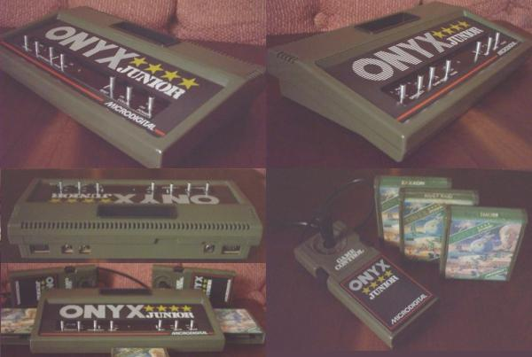
Videogame Onyx Jr
O Onyx Jr foi um console de videogames desenvolvido pela empresa brasileira Microdigital em 1985. A Microdigital decidiu criar um console compatível com o Atari 2600, que já possuía uma base de usuários estabelecida no país devido aos clones existentes. No entanto, talvez devido à saturação do mercado naquela época, quando as vendas dos clones do Atari estavam em declínio global devido ao surgimento de computadores domésticos mais avançados, que também podiam ser usados para jogos, o Onyx Jr não conseguiu alcançar grande sucesso de vendas.
1985 -
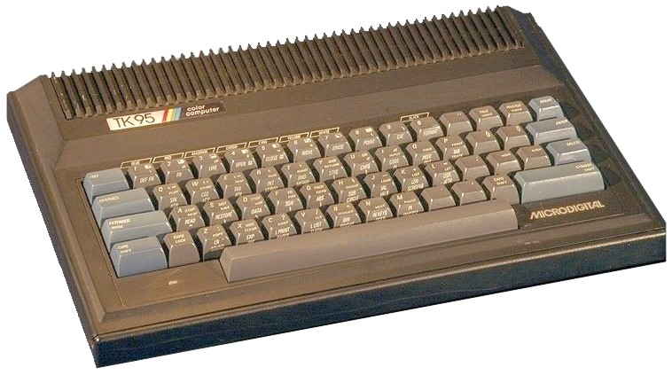
TK95
Segunda e última versão brasileira do computador doméstico ZX Spectrum, fabricado no Brasil pela Microdigital Eletrônica a partir de meados de 1986. Ele utilizava o microprocessador Z-80A de 8 bits, com uma velocidade de clock de 3,58 MHz. A principal mudança do TK95 em relação ao modelo anterior, o TK90X, estava no design do gabinete, que agora se assemelhava de forma notável ao 'Commodore Plus/4'. Além disso, o TK95 possuía um teclado "semi-profissional" que oferecia uma experiência de digitação mais adequada do que o teclado "chiclete" do modelo anterior.
1986 -

TK 3000 IIe
O TK3000 IIe é um microcomputador pessoal fabricado pela empresa brasileira Microdigital Eletrônica e compatível com o modelo Apple IIe Enhanced, desenvolvido pela Apple Inc. dos Estados Unidos. Foi apresentado ao público durante a V Feira Internacional de Informática, em setembro de 1985, e lançado no mercado em abril de 1986, com um preço de Cz$ 12.500,00.... + Informações se encontram no restante do site.
1986 -

TK 3000 IIe Compac
O TK3000 IIe Compact foi lançado pela empresa Microdigital Eletrônica em junho de 1987. Esse modelo já vinha com opções de memória, sendo disponibilizado com 128Kb (64+64Kb) ou 320Kb (64+256Kb) de RAM. Além disso, o computador contava com interfaces de drive e impressora, suporte para 80 colunas e oferecia uma alta resolução gráfica em modo dupla.
1987 -
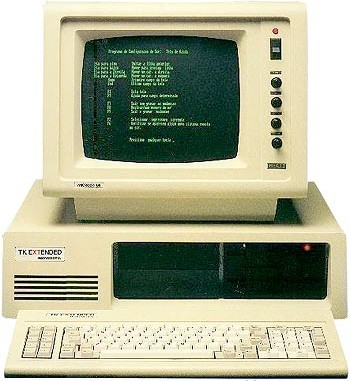
TK Extended
O TK Extended foi uma versão local do PC-XT lançada pela Microdigital em 1988. A fim de minimizar a diferença tecnológica entre os modelos americanos e brasileiros, a fabricante ofereceu um cartão de atualização chamado Cometa 286, que tinha como objetivo substituir o processador por um processador Intel 20286 de 7,15 MHz, e também incluía um co-processador matemático 20287.
1987 -
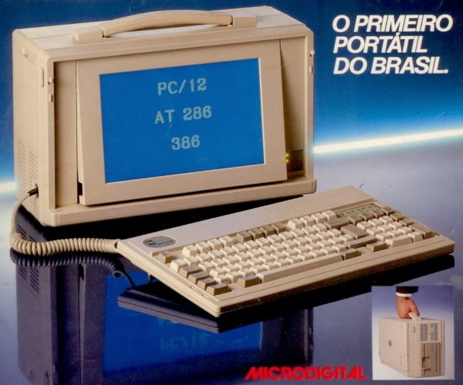
TK PORTABLE
O TK Portable foi lançado em 1989 pela Microdigital, tornando-se o primeiro PC-IBM portátil do Brasil. Embora tenham sido anunciadas três versões, apenas um modelo PC-XT de 12 MHz e um AT 286 de 12 ou 16 MHz foram produzidos e comercializados. A versão 386 não chegou a ser lançada. O TK Portablea vinha com três slots de expansão, unidade de disquete (inicialmente com 5 1/4" e depois com 3 1/2"), além de um disco rígido interno. O computador também possuía uma tela LCD de 11" com resolução padrão CGA de 640x400 pixels, juntamente com um teclado em português. Apenas algumas milhares de unidades foram vendidas.
1989 -
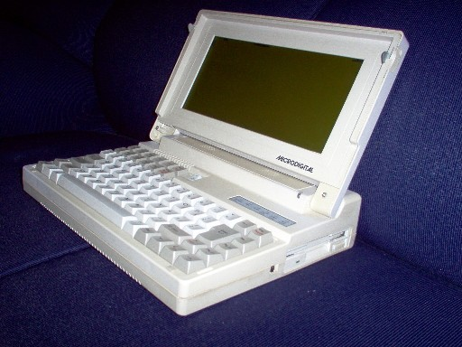
LT1600D
Em novembro de 1990, foi lançado o LT 1600 D, o primeiro laptop brasileiro. Inicialmente chamado de FIRST, o laptop era compatível com IBM PC-XT e contava com 640Kb de RAM. Oferecia duas opções de processador, o CPU NEC V-30 e o Intel 8086, com uma frequência selecionável de 4 a 10MHz. Possuía um drive de disquete de 720Kb ou 1,44Mb, além de saídas para impressora, monitor de vídeo, drive de disquete externo e entradas COM1 e COM2. Em março de 1991, a Microdigital também lançou o modelo LT 1600 W, que incluía um mini modem e um disco rígido Winchester com capacidade de 20Mb ou 40Mb.
1990 -
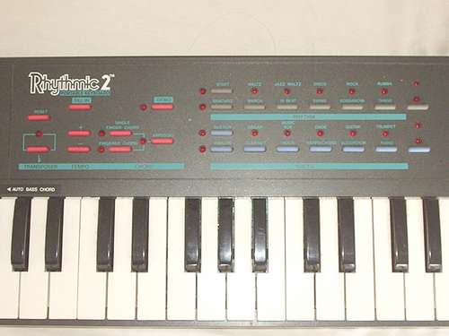
Teclado Microdigital Rhythmic 2 Portable Keyboard
O primeiro e último instrumento lançado pela Microdigital em 1991 era um teclado musical com 49 teclas, abrangendo 4 oitavas. Ele possuía recursos como memória de acordes, 10 ritmos programáveis, 10 instrumentos programáveis e podia funcionar tanto com pilhas quanto com fonte de alimentação. Além disso, o teclado possuía uma saída para fones de ouvido, proporcionando uma experiência mais personalizada ao usuário.
1991 -
Encerramento das Atividades
Dois motivos são atribuídos ao fim da marca. Primeiramente, o governo de São Paulo realizou uma licitação que envolvia a empresa, resultando em altos gastos para entregar os produtos encomendados. No entanto, o pedido foi posteriormente cancelado, deixando a marca com uma enorme dívida que impactou significativamente suas finanças. Além disso, o governo de Fernando Collor abriu a economia brasileira, permitindo que grandes multinacionais estrangeiras de tecnologia ingressassem oficialmente no país. As empresas nacionais, que não estavam acostumadas com essa concorrência externa, sofreram grandes perdas em um curto período de tempo. Como resultado, em 1992, as atividades da empresa foram encerradas.
1992